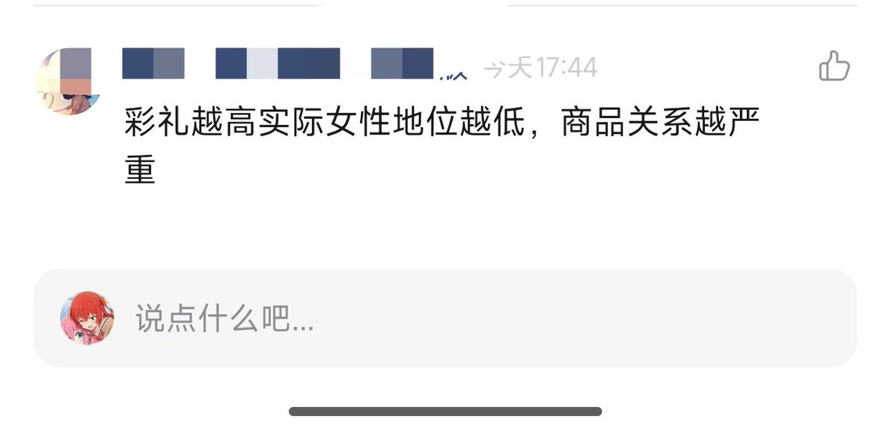

大狐帝国史官邹智萱（笔名段歌文）
@Rococo90933671
@RainEngine2024m 我其实也是这个意思

大狐帝国史官邹智萱（笔名段歌文）
@Rococo90933671
彩礼这个东西，本质上是农业社会生产关系下出现的一种补偿支付。
因为在那样的社会里，女性出嫁后，通常就成了夫家的人，娘家平白少了一个重要的劳动力（男耕女织的自然经济下，女儿的劳动贡献很实在）。
彩礼就是男方家庭对女方家庭这种损失的补偿，也算是一种对养育之恩的回报。 https://t.co/iV3cV9YJsf
高坂穗嘉图
@RainEngine2024m
这位好同志说得对！ https://t.co/Q2wIHEQpA3 https://t.co/rpLvaTeEI1